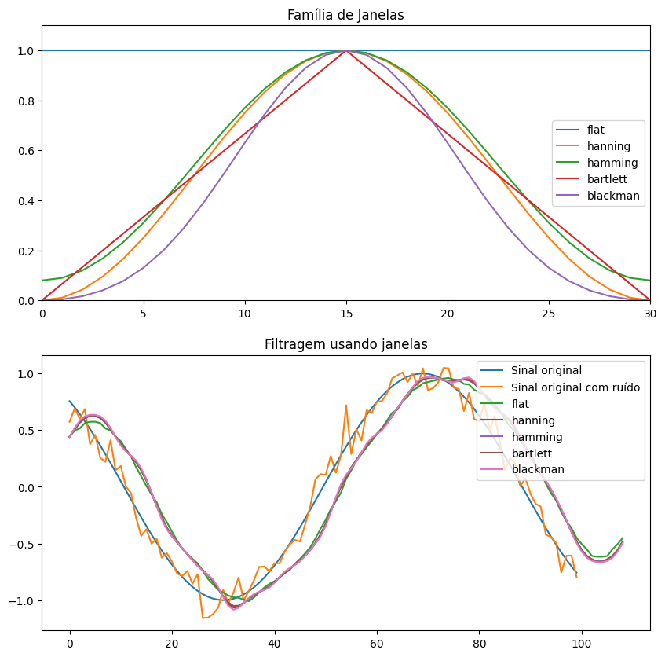
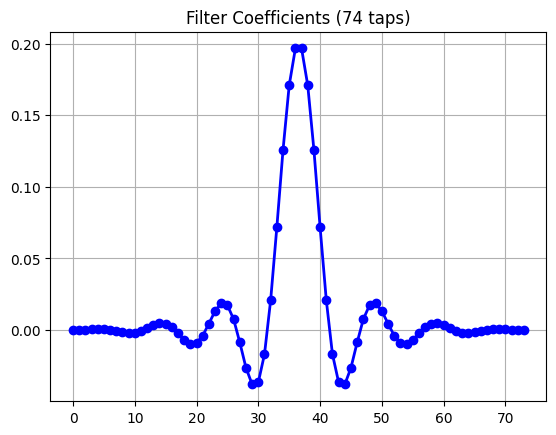
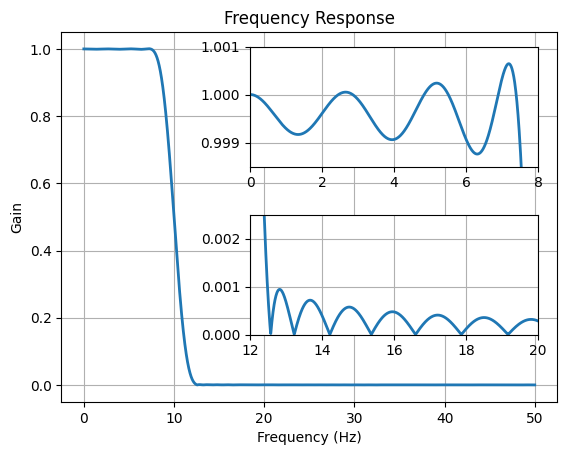
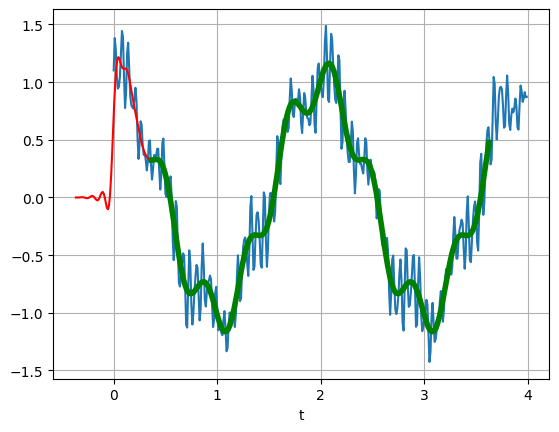

Aula 11 - Filtros FIR - Parte 3#
Versão 2023
Essas notas de aula podem ser compartilhadas nos termos da lincença Creative Commons CC BY-NC-ND 4.0, com propósitos exclusivamente educacionais.
Attribution-NonCommercial-NoDerivatives 4.0 International
Simulação dos Principais Filtros usando Janelas#
1. Traçado das Janelas#
import numpy
from numpy import *
from matplotlib.pylab import *
def smooth(x,window_len=21,window='hanning'):
if x.ndim != 1:
raise print(ValueError, "smooth only accepts 1 dimension arrays.")
if x.size < window_len:
raise print(ValueError, "Input vector needs to be bigger than window size.")
if window_len<3:
return x
if not window in ['flat', 'hanning', 'hamming', 'bartlett', 'blackman']:
raise print(ValueError, "Window is on of 'flat', 'hanning', 'hamming', 'bartlett', 'blackman'")
s=numpy.r_[x[window_len-1:0:-1],x,x[-2:-window_len-1:-1]]
if window == 'flat':
w=numpy.ones(window_len,'d')
else:
w=eval('numpy.'+window+'(window_len)')
y=numpy.convolve(w/w.sum(),s,mode='valid')
return y
t=linspace(-4,4,100)
x=sin(t)
xn=x+randn(len(t))*0.1
y=smooth(x)
ws=31
figure(figsize = (10,10))
subplot(211)
plot(ones(ws))
windows=['flat', 'hanning', 'hamming', 'bartlett', 'blackman']
for w in windows[1:]:
eval('plot('+w+'(ws) )')
axis([0,30,0,1.1])
legend(windows)
title("Família de Janelas")
subplot(212)
plot(x)
plot(xn)
for w in windows:
plot(smooth(xn,10,w))
l=['Sinal original', 'Sinal original com ruído']
l.extend(windows)
legend(l)
title("Filtragem usando janelas")
show()

2. Detalhe da janela - tempo/frequência#
a. Janela de kaiser#
b. \(M=74\)#
from numpy import cos, sin, pi, absolute, arange
from scipy.signal import kaiserord, lfilter, firwin, freqz
from pylab import figure, clf, plot, xlabel, ylabel, xlim, ylim, title, grid, axes, show
#------------------------------------------------
# Create a signal for demonstration.
#------------------------------------------------
sample_rate = 100.0
nsamples = 400
t = arange(nsamples) / sample_rate
x = cos(2*pi*0.5*t) + 0.2*sin(2*pi*2.5*t+0.1) + \
0.2*sin(2*pi*15.3*t) + 0.1*sin(2*pi*16.7*t + 0.1) + \
0.1*sin(2*pi*23.45*t+.8)
#------------------------------------------------
# Create a FIR filter and apply it to x.
#------------------------------------------------
# The Nyquist rate of the signal.
nyq_rate = sample_rate / 2.0
# The desired width of the transition from pass to stop,
# relative to the Nyquist rate. We'll design the filter
# with a 5 Hz transition width.
width = 5.0/nyq_rate
# The desired attenuation in the stop band, in dB.
ripple_db = 60.0
# Compute the order and Kaiser parameter for the FIR filter.
N, beta = kaiserord(ripple_db, width)
# The cutoff frequency of the filter.
cutoff_hz = 10.0
# Use firwin with a Kaiser window to create a lowpass FIR filter.
taps = firwin(N, cutoff_hz/nyq_rate, window=('kaiser', beta))
# Use lfilter to filter x with the FIR filter.
filtered_x = lfilter(taps, 1.0, x)
#------------------------------------------------
# Plot the FIR filter coefficients.
#------------------------------------------------
#figure(figsize = (10,10))
figure(1)
plot(taps, 'bo-', linewidth=2)
title('Filter Coefficients (%d taps)' % N)
grid(True)
#------------------------------------------------
# Plot the magnitude response of the filter.
#------------------------------------------------
#figure(figsize = (20,20))
figure(2)
clf()
w, h = freqz(taps, worN=8000)
plot((w/pi)*nyq_rate, absolute(h), linewidth=2)
xlabel('Frequency (Hz)')
ylabel('Gain')
title('Frequency Response')
ylim(-0.05, 1.05)
grid(True)
# Upper inset plot.
ax1 = axes([0.42, 0.6, .45, .25])
plot((w/pi)*nyq_rate, absolute(h), linewidth=2)
xlim(0,8.0)
ylim(0.9985, 1.001)
grid(True)
# Lower inset plot
ax2 = axes([0.42, 0.25, .45, .25])
plot((w/pi)*nyq_rate, absolute(h), linewidth=2)
xlim(12.0, 20.0)
ylim(0.0, 0.0025)
grid(True)
#------------------------------------------------
# Plot the original and filtered signals.
#------------------------------------------------
# The phase delay of the filtered signal.
delay = 0.5 * (N-1) / sample_rate
#figure(figsize = (20,20))
figure(3)
# Plot the original signal.
plot(t, x)
# Plot the filtered signal, shifted to compensate for the phase delay.
plot(t-delay, filtered_x, 'r-')
# Plot just the "good" part of the filtered signal. The first N-1
# samples are "corrupted" by the initial conditions.
plot(t[N-1:]-delay, filtered_x[N-1:], 'g', linewidth=4)
xlabel('t')
grid(True)
show()



3. Uso das Janelas em diferentes configurações de filtros#
from scipy import signal
numtaps = 13
# Low-pass from 0 to f:
#
f = 0.1
signal.firwin(numtaps, f)
array([0.00679069, 0.01516873, 0.03947091, 0.07798288, 0.1211849 ,
0.15528388, 0.16823602, 0.15528388, 0.1211849 , 0.07798288,
0.03947091, 0.01516873, 0.00679069])
# Use a specific window function:
#
signal.firwin(numtaps, f, window='nuttall')
array([4.39330500e-05, 1.25923180e-03, 1.11408972e-02, 4.67624843e-02,
1.18823402e-01, 2.01967943e-01, 2.40004218e-01, 2.01967943e-01,
1.18823402e-01, 4.67624843e-02, 1.11408972e-02, 1.25923180e-03,
4.39330500e-05])
# Band-pass:
#
f1, f2 = 0.1, 0.2
signal.firwin(numtaps, [f1, f2], pass_zero=False)
array([-0.01955552, -0.02699707, -0.02683301, 0.02436791, 0.13329945,
0.24931866, 0.29942389, 0.24931866, 0.13329945, 0.02436791,
-0.02683301, -0.02699707, -0.01955552])
# Band-stop:
#
signal.firwin(numtaps, [f1, f2])
array([ 0.00964459, 0.0133147 , 0.01323378, -0.01201802, -0.06574202,
-0.12296159, 1.32905711, -0.12296159, -0.06574202, -0.01201802,
0.01323378, 0.0133147 , 0.00964459])
# Multi-band (passbands are [0, f1], [f2, f3] and [f4, 1]):
#
f3, f4 = 0.3, 0.4
signal.firwin(numtaps, [f1, f2, f3, f4])
array([-1.15829050e-17, 9.87419131e-18, 2.67129651e-02, 6.44528762e-02,
-9.55589666e-17, -1.87334605e-01, 1.19233753e+00, -1.87334605e-01,
-9.55589666e-17, 6.44528762e-02, 2.67129651e-02, 9.87419131e-18,
-1.15829050e-17])
#Multi-band (passbands are [f1, f2] and [f3,f4]):
#
signal.firwin(numtaps, [f1, f2, f3, f4], pass_zero=False)
array([ 9.87666692e-18, 0.00000000e+00, -4.25188766e-02, -1.02589281e-01,
5.07002235e-17, 2.98179439e-01, 4.74459237e-01, 2.98179439e-01,
5.07002235e-17, -1.02589281e-01, -4.25188766e-02, 0.00000000e+00,
9.87666692e-18])